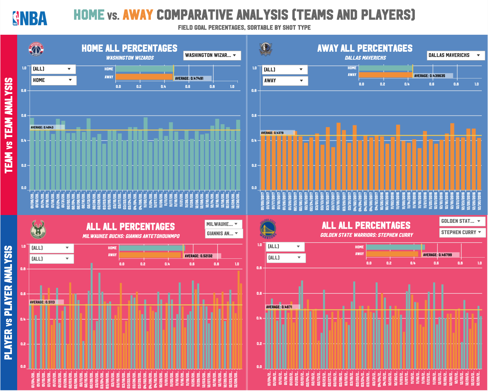
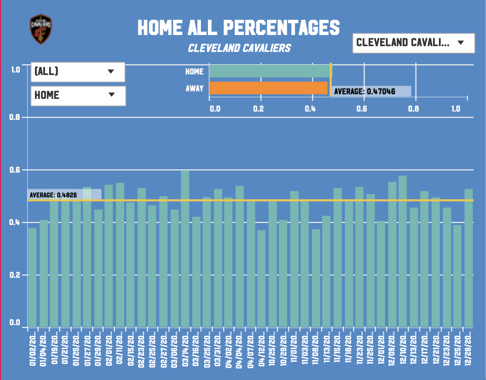
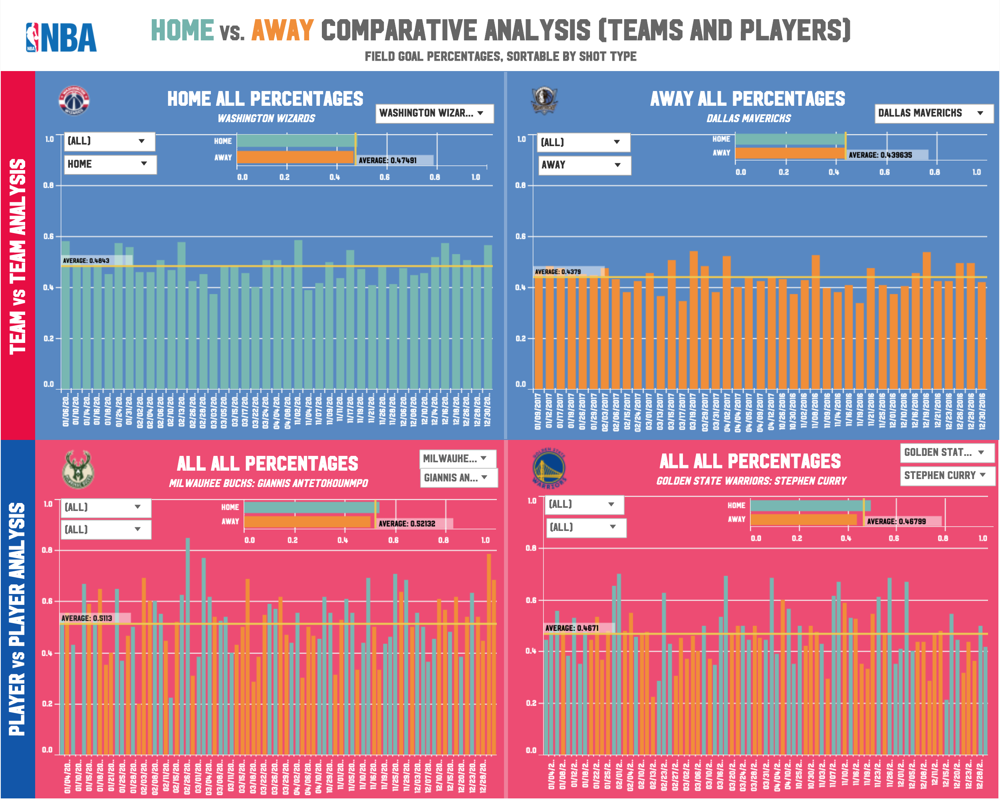
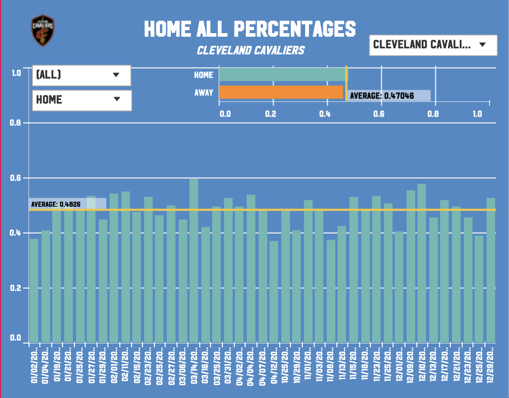

List the key design features of your visualization and dashboard.
The dashboard allows for team-vs.-team and player-vs.-player field goal percentage comparisons – for total field goals, 2pt field goals,
and 3pt field goals. It contains two groups of visualizations: one for team-vs.-team comparisons and another for player-vs.-player.

Each set of visualizations (both for player and team segments) contain a [1] vertical bar graph that clearly illustrates through color and length of axis the total field goal percentage per game played by each team. Having each relevant game situated in the vertical bar graph helps show any consistency or inconsistency in player efficiency throughout the year. Another [2] bar graph (horizontal) is also located on the upper-right segment of each vertical bar graph, displaying a summarized FG% for both home and away games to aid the viewer in seeing a general picture of the field goal percentage situation for each team and player. The summarized horizontal bar graph also helps viewers see if there is a noticeable difference in team/player efficiency in home and away games.

Each vertical bar graph also includes a [3] team logo visual that connects to the team dropdown list located in the upper-right hand of the graph and change as the chosen team changes. This helps viewers immediately see which team is being analyzed, rather than reading through each visualization title. The title explains the graph a little further, showing the constraints of each filter in a main title and a subtitle.
Another important feature of each visualization is the [4] average line that runs through each bar graph. The line shows the average field goal percentage for each bar graph to aid viewers in immediately seeing a number representing the overall performance of a team/player within the set of filter options chosen and easily compare performance on each side.
The [5] tooltip of each data point also provides more insight and detail behind each game: including opponent, shots made, and shots attempted. This allows viewers to see the details and analyze the story behind each field goal percentage, such as: ‘Did the team they play against play a role in their field goal percentage?’, or ‘Was he actually efficient, or did he just shoot more than usual?’
The dashboard fulfills many of the key design principles that we discussed in class, including proximity, similarity, enclosure, and continuity. Since the bars of each visual are located closer together and each bar graph is appropriately separated, it’s easy to know which bars belong to which graph, and therefore the same team/player. To easily see which games are played at home or away, I chose colors that could be seen clearly in relation to each other and to the background colors I used. It is also easy to distinguish one bar graph from another because of the difference in background color, as well as the line I used to separate graphs horizontally. The order in which the data points are arranged horizontally (by date) also provides continuity in terms of a team’s or a player’s progress throughout the season.

Each set of visualizations (both for player and team segments) contain a [1] vertical bar graph that clearly illustrates through color and length of axis the total field goal percentage per game played by each team. Having each relevant game situated in the vertical bar graph helps show any consistency or inconsistency in player efficiency throughout the year. Another [2] bar graph (horizontal) is also located on the upper-right segment of each vertical bar graph, displaying a summarized FG% for both home and away games to aid the viewer in seeing a general picture of the field goal percentage situation for each team and player. The summarized horizontal bar graph also helps viewers see if there is a noticeable difference in team/player efficiency in home and away games.

Each vertical bar graph also includes a [3] team logo visual that connects to the team dropdown list located in the upper-right hand of the graph and change as the chosen team changes. This helps viewers immediately see which team is being analyzed, rather than reading through each visualization title. The title explains the graph a little further, showing the constraints of each filter in a main title and a subtitle.
Another important feature of each visualization is the [4] average line that runs through each bar graph. The line shows the average field goal percentage for each bar graph to aid viewers in immediately seeing a number representing the overall performance of a team/player within the set of filter options chosen and easily compare performance on each side.
The [5] tooltip of each data point also provides more insight and detail behind each game: including opponent, shots made, and shots attempted. This allows viewers to see the details and analyze the story behind each field goal percentage, such as: ‘Did the team they play against play a role in their field goal percentage?’, or ‘Was he actually efficient, or did he just shoot more than usual?’
The dashboard fulfills many of the key design principles that we discussed in class, including proximity, similarity, enclosure, and continuity. Since the bars of each visual are located closer together and each bar graph is appropriately separated, it’s easy to know which bars belong to which graph, and therefore the same team/player. To easily see which games are played at home or away, I chose colors that could be seen clearly in relation to each other and to the background colors I used. It is also easy to distinguish one bar graph from another because of the difference in background color, as well as the line I used to separate graphs horizontally. The order in which the data points are arranged horizontally (by date) also provides continuity in terms of a team’s or a player’s progress throughout the season.
Do you think NBA players and/or teams play better at home based on your analysis? Why?
Based on the visuals I used and my analysis of the dashboard, I believe that players and teams play better at home than away. What was interesting,
however, was that while teams generally had similar field goal percentages at home and away, with home games having a slight improvement in terms of percentage (slight meaning 0-3%),
players had a steeper decline in terms of efficiency in away games as compared to home games (steeper meaning around 5-10%). I think this is so because since players are individually
rated, their field goal percentages values are more susceptible to fluctuation both ways. However, since teams are aggregately rated and more data points are used, some players could
balance out others (like in the law of averages).
To explain why players and teams could generally perform better at home, there could be many factors that come into effect. First, since the atmosphere at home games is mostly, if not always, friendlier to the home team, they gain a certain amount of confidence and comfort in playing in front of their fans. Another reason could be that they are used to the environment, climate, and general “feel” of the basketball court. They play in their home arena 41 out of 82 times in a year, so they would most probably be able to tell which parts of the court they play well in and even how the arena affects their play and concentration. Since they play or reside in this area majority of the year, the climate of the city would not take as much of a toll on their bodies as it would teams that only play there once or twice in a year (especially in difficult or unfavorable climates like in Denver, Phoenix, or San Antonio).
To explain why players and teams could generally perform better at home, there could be many factors that come into effect. First, since the atmosphere at home games is mostly, if not always, friendlier to the home team, they gain a certain amount of confidence and comfort in playing in front of their fans. Another reason could be that they are used to the environment, climate, and general “feel” of the basketball court. They play in their home arena 41 out of 82 times in a year, so they would most probably be able to tell which parts of the court they play well in and even how the arena affects their play and concentration. Since they play or reside in this area majority of the year, the climate of the city would not take as much of a toll on their bodies as it would teams that only play there once or twice in a year (especially in difficult or unfavorable climates like in Denver, Phoenix, or San Antonio).